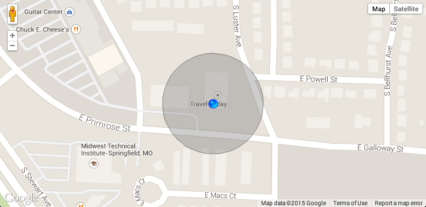

Geolocation Marker for Google Maps API v3
This library uses geolocation to add a marker and accuracy circle to a map. The marker position is automatically updated as the user position changes.

To add the Geolocation Marker, just instantiate a new GeolocationMarker object, passing the constructor your map object:
var mapOptions = {
zoom: 17,
center: new google.maps.LatLng(-34.397, 150.644),
mapTypeId: google.maps.MapTypeId.ROADMAP
};
var map = new google.maps.Map(document.getElementById('map_canvas'),
mapOptions);
var GeoMarker = new GeolocationMarker(map);Note: This library will only function in browsers supporting the W3C Geolocation API. This excludes Internet Explorer versions 8 and older.